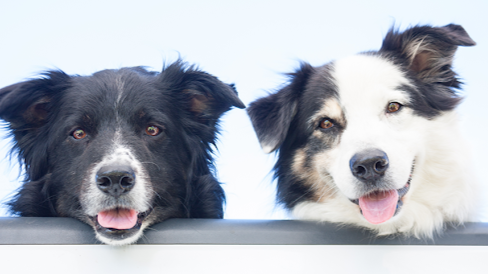

Plataforma que conecta
animais em situações de rua
com familias disposta a
adotá-los. Adotar uma animal
é um gesto de amor.

Como cadastrar um bichinho?
Liste o nome, idade,
características e informações
sobre seu pet como sexo,
vacinas,porte e raças.
Levantamento inédito do Instituto Pet
Brasil aponta que grande parte (46%)
está em organizações da região
Sudeste.
Aqui você pode anunciar seu
animalzinho para adoção!